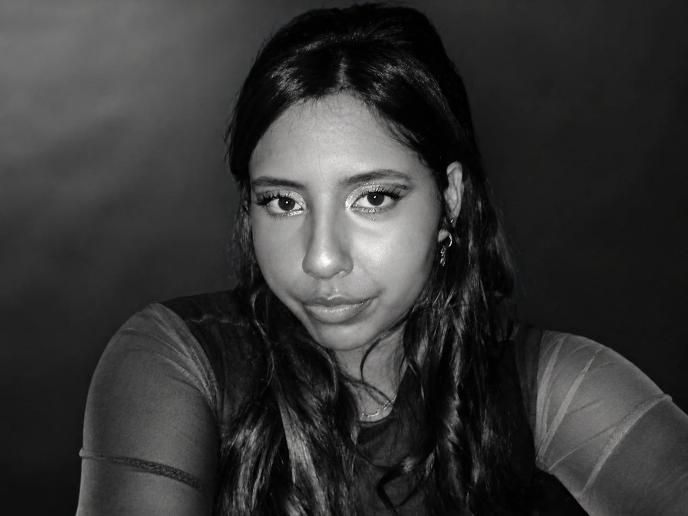

Estudante
de Tecnologia
Estudante do curso técnico em Informática para Internet, com background em Design de Moda. Em transição de carreira para a área de Cibersegurança, busco aprofundamento por meio de cursos e certificações. Combino visão analítica e atenção a detalhes com conhecimentos técnicos em redes, desenvolvimento web e segurança da informação.
Sou apaixonada por tecnologia e estou sempre em busca de novos desafios e oportunidades para crescer profissionalmente. Acredito que a aprendizagem contínua é essencial para o sucesso na área de TI, e estou comprometida em aprimorar minhas habilidades constantemente.
Estou aberta a oportunidades de estágio, projetos colaborativos e networking com profissionais da área. Se você quiser conversar sobre colaborações ou oportunidades, entre em contato comigo.

Isabel
Carvalho
Idiomas
Inglês: fluente
Formação acadêmica
- Cecon Técnico em Informática para Internet · abril de 2026 – novembro de 2027
- UniAcademia - Centro Universitário Tecnólogo em Design de Moda · fevereiro de 2024 – setembro de 2026
- Microlins Técnico em Informática · fevereiro de 2018 – novembro de 2019